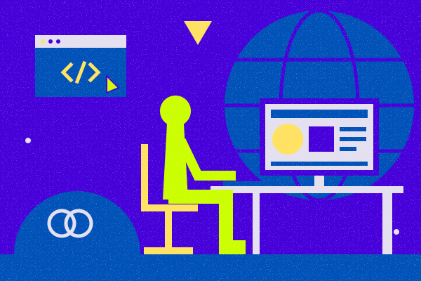

I am a first-year student in the ITAS-BITS (Business Information Technology Services) program at VIU. I am passionate about computers and the many different possibilities they have to offer. My experience with computers dates back to when I got a VTech laptop when I was two. Since then, I have gained experience with all sorts of hardware and software and have yet to grow tired of it.

When I was younger, I took a few guitar lessons, but never went that far with them. I kind of want to pick up where I left off now that I'm more musically inclined. When I pick up a guitar, I can play a few chords, but I'd like to refine my technique.
I really like taking apart computers as well as making things. I want to combine those interests and try to assemble my own computer. I think it would be a fun challenge for me.
Ever since being introduced to the world of trades, I've discovered how many there are to learn. I might want to go back to school or get an apprenticeship when I'm older. I am most interested in pursuing culinary arts or carpentry.
Email: mario.macrae@itas.ca
Linkedin: My profile
Classmates: